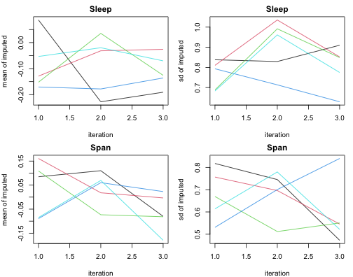
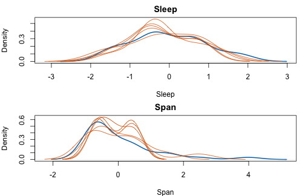
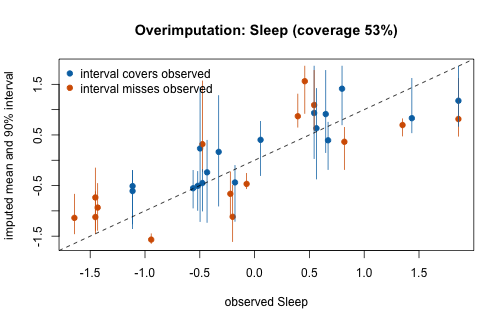

vignettes/vimpute-mi.Rmd
vimpute-mi.RmdThis vignette walks through a complete multiple-imputation workflow
with vimpute(): simulate missingness with a known
mechanism, impute multiply, check convergence and calibration, pool with
Rubin’s rules, and validate against the truth. The chunks below were run
when the vignette was precomputed (vignettes/precompute.R
in the source repository); the code is shown unchanged and runs as
is.
library(VIM)
set.seed(2026)
data(sleep, package = "VIM")
truth <- na.omit(sleep[, c("BodyWgt", "BrainWgt", "NonD", "Sleep", "Span", "Gest")])
truth <- as.data.frame(scale(truth)) # common scale keeps the example compact
nrow(truth)
#> [1] 42makeMissing() generates MCAR/MAR/MNAR missingness in
complete data — here MAR: the probability that Sleep and
Span go missing grows with the other (observed) variables.
The returned "where" attribute marks the amputed cells, so
the truth stays available for validation.
amp <- makeMissing(truth, prop = 0.25, mechanism = "MAR",
vars = c("Sleep", "Span"), seed = 1)
colSums(is.na(amp))
#> BodyWgt BrainWgt NonD Sleep Span Gest
#> 0 0 0 10 10 0m = 5 imputations; with m > 1, each
imputation refits its models on a bootstrap sample
(boot = TRUE is the default for multiple imputation) and
the default uncert = "pmm" draws from observed donor
values, so the imputations differ between runs (a prerequisite for
Rubin’s rules). Per-variable settings use the spec interface; three
sequential iterations give the convergence chains something to show.
mi <- vimpute(amp,
spec = list(.default = vs_ranger(num.trees = 100)),
m = 5, sequential = TRUE, nseq = 3, seed = 7, verbose = FALSE)
mi
#> Multiply imputed dataset (vimmi)
#> Observations: 42
#> Variables: 6
#> Imputations: m = 5
#> Bootstrap: yes
#> Uncertainty: pmm
#> Missing cells: 20 across 2 variables
#> Sleep: 10 NAs (ranger; NRMSE = 0.401 [oob])
#> Span: 10 NAs (ranger; NRMSE = 0.727 [oob])print() already answers the practitioner’s first
question — can I trust this? — with a per-variable
model-quality metric (NRMSE, out-of-bag for ranger; PFC for
factors).
plot(mi) # chains: mean/sd of the imputed values per iteration
plot(mi, "density") # observed (blue, bold) vs per-imputation imputed (red)
with() fits a model on each completed dataset and
returns a mice-compatible mira, so the standard pipeline
applies unchanged.
fits <- with(mi, lm(Sleep ~ BodyWgt + Span))
pooled <- mice::pool(fits)
summary(pooled)
#> term estimate std.error statistic df p.value
#> 1 (Intercept) -0.06347952 0.1326505 -0.4785471 35.42201 0.63520157
#> 2 BodyWgt -0.20018445 0.1532492 -1.3062675 33.80298 0.20028060
#> 3 Span -0.26789463 0.1527491 -1.7538210 32.48761 0.08889201Alternatively, convert the whole object: vim_as_mids(mi)
yields a genuine mice::mids for any downstream mice
infrastructure.
mids <- vim_as_mids(mi)
class(mids)
#> [1] "mids"Tuning is controlled per variable (spec) and per call
(tune_control); with m > 1 the tuner runs
once and all imputations share its parameters. The tuning log records
what was chosen.
mi_tuned <- vimpute(amp,
spec = list(Sleep = vs_ranger(num.trees = 100, tune = TRUE),
.default = vs_ranger(num.trees = 100)),
tune_control = vimpute_tune_control(budget = 4, folds = 3),
m = 2, sequential = FALSE, seed = 7, verbose = FALSE)
tl <- mi_tuned$tuning_log
tail(tl, 1)[[1]][c("variable", "tuned", "tuned_better", "n_evals", "folds")]
#> $variable
#> [1] "Span"
#>
#> $tuned
#> [1] FALSE
#>
#> $tuned_better
#> [1] FALSE
#>
#> $n_evals
#> NULL
#>
#> $folds
#> NULLoverimpute() treats the observed cells of a
variable as missing (fold by fold), imputes them multiply, and compares
observed values with the imputed intervals — a model-agnostic
calibration check that needs no ground truth.
ov <- overimpute(amp, "Sleep",
spec = list(.default = vs_ranger(num.trees = 100)),
draws = 5, folds = 3, sequential = FALSE, seed = 3)
ov
#> Overimputation diagnostic for 'Sleep'
#> 32 observed cells, 5 draws each (3 folds)
#> Empirical coverage of the 90% intervals: 53.1%
#> Mean absolute error (observed vs imputed mean): 0.4871
plot(ov)
Because the missingness was simulated, the imputations can be scored
against the true values — the loop makeMissing() →
vimpute() → evaluation() that any benchmark
study needs.
completed <- vim_complete(mi, 1)
evaluation(truth, completed, where = attr(amp, "where"))
#> $err_num
#> [1] 0.3303824
#>
#> $err_cat
#> [1] 0
#>
#> $error
#> [1] 0.3303824Like all conditional imputation, vimpute() assumes MAR
(which includes MCAR). Under MNAR — missingness driven by the unobserved
values themselves — estimates can be biased and no imputation method can
repair this from the observed data alone;
makeMissing(mechanism = "MNAR") supports exactly the
sensitivity simulations such situations call for.